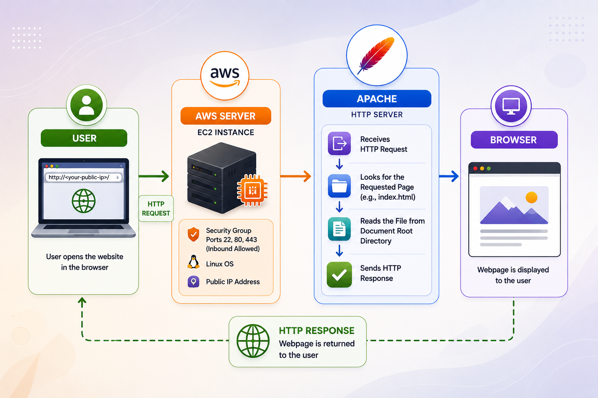
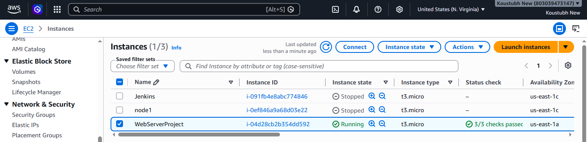
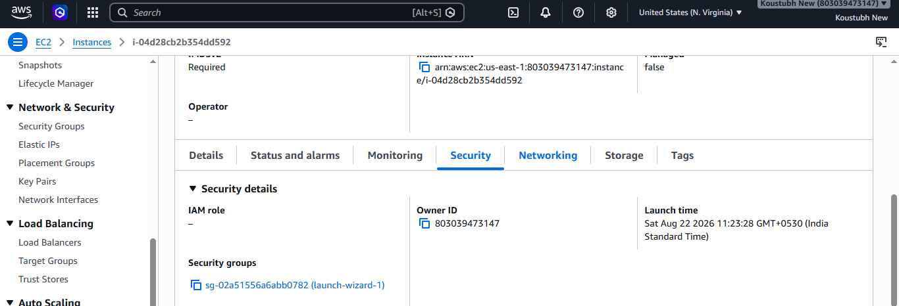
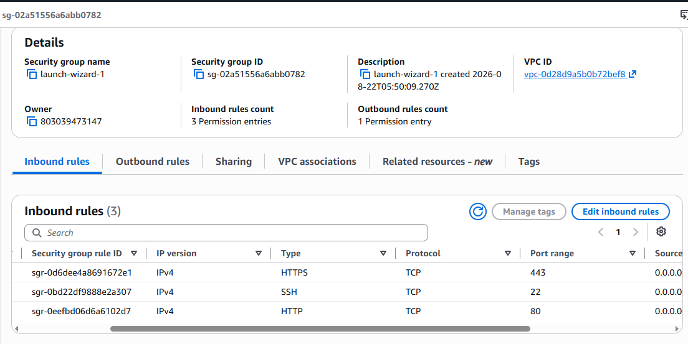
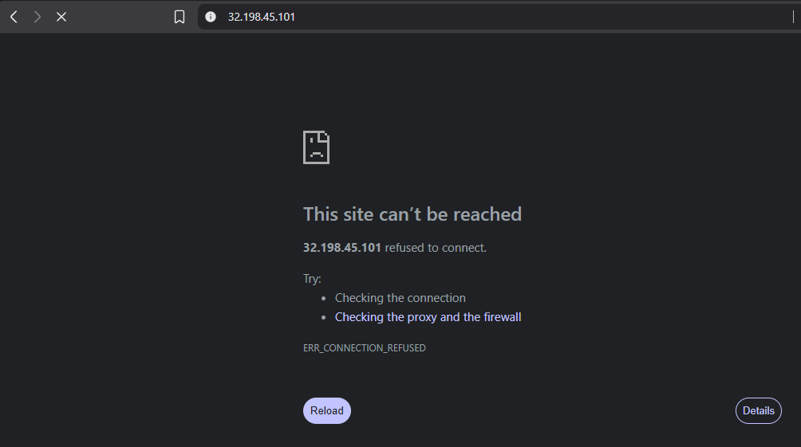
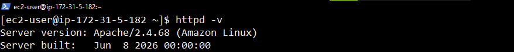
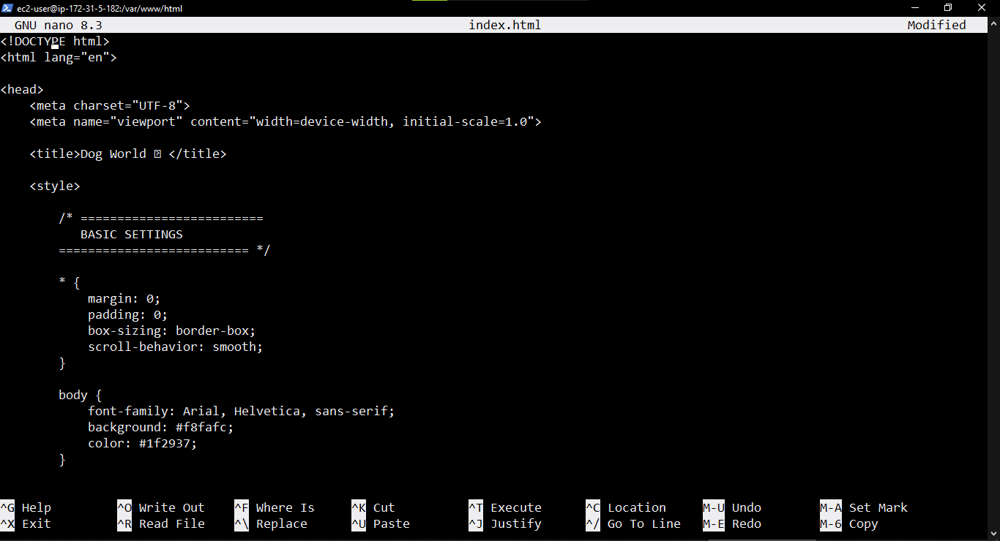
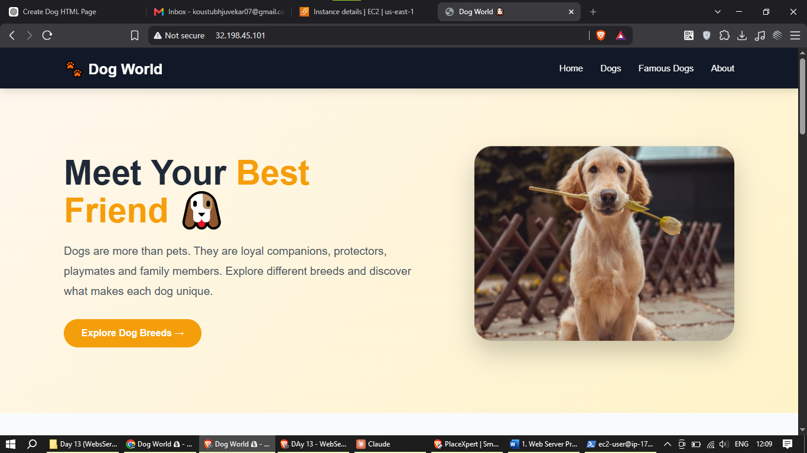

From EC2 Instance to a Working Website
Understanding the complete practical flow.
The Goal 🎯
The purpose of this project is to create a basic web server (Apache web server here) on an AWS instance and verify that a webpage can be served to a user through the server's public IP address.
Before uploading a developer's code, we can create a simple sample index page and test it. If it loads successfully, we know that the basic server and network configuration are working.

Web Server Installation - Step by Step
Follow the same sequence used in the practical project.
Launch AWS Instance ☁️
Launch an AWS EC2 instance. After launching the instance, identify its Public IP address and the Security Group attached to it.

Open the Security Group 🔐
Click on the EC2 instance. Then: Scroll down → Security → Click Security Group

Check the Inbound Rules 🌐
Check the Security Group's Inbound Rules. The required ports should be open.
SSH
Used to connect to the server remotely.
HTTP
Used for normal HTTP web traffic.
HTTPS
Used for HTTPS traffic when TLS/SSL is configured.
If a required port is not open, click on Edit Inbound Rules, add the rule, and save it.

Copy the Public IP Address 🌍
Copy the Public IP address of the AWS EC2 instance. This IP address will later be entered in the browser to access the webpage.

SSH Into the Server 🔑
Now SSH into the server using PowerShell or any client shell.
ssh -i your-key.pem ec2-user@YOUR_PUBLIC_IP
Update Server Packages 📦
Update the packages on the server before installing Apache.
sudo yum update -y Install Apache Web Server 🖥️
sudo yum install httpd -y Check Apache Version 🔍
Verify that Apache was installed successfully by checking its version.
httpd -v 
Start Apache Server ▶️
Start the Apache web server. Both commands perform the same task. You can use either one.
sudo service httpd start sudo systemctl start httpd Check Apache Status 💚
Check whether the Apache service is running. Both commands provide the Apache service status.
sudo service httpd status sudo systemctl status httpd Enable Apache at Boot 🔄
Enable Apache so that it starts automatically whenever the server comes back online.
sudo systemctl enable httpd Go to Apache's Document Root 📁
Apache uses a document root to serve webpages. In this project we will create our webpage inside:
cd /var/www/html Create index.html ✍️
Now create the webpage using the nano editor.
sudo nano index.html Add HTML Code and Save 💻
When nano opens, write or paste your HTML code inside index.html. After adding the code, save the file.
Press Ctrl + X
Press Y
Press Enter

Open the Website in Browser 🌐
Now go to the browser and enter the EC2 Public IP address using HTTP.
http://YOUR_PUBLIC_IP/ 
Your index.html webpage should be displayed in the browser.
Important Commands at a Glance 💻
A quick reference for the practical.
| Command | Purpose | Copy | |
|---|---|---|---|
| 01 | ssh -i your-key.pem ec2-user@YOUR_PUBLIC_IP | Connect to the EC2 server remotely using SSH. | |
| 02 | sudo yum update -y | Update the available packages on the server. | |
| 03 | sudo yum install httpd -y | Install the Apache HTTP Server. | |
| 04 | httpd -v | Check the installed Apache version. | |
| 05 | Option 1 sudo service httpd start | Start Apache. | |
| OR | Option 2 sudo systemctl start httpd | Start Apache. | |
| 06 | Option 1 sudo service httpd status | Check Apache status. | |
| OR | Option 2 sudo systemctl status httpd | Check Apache status. | |
| 07 | sudo systemctl enable httpd | Enable Apache to start automatically at boot. | |
| 08 | cd /var/www/html | Move to Apache's document root. | |
| 09 | sudo nano index.html | Create or edit the index.html webpage. | |
Ctrl + X → Y → Enter | Save the file and exit nano. | ||
| 10 | http://YOUR_PUBLIC_IP/ | Open the webpage through the EC2 public IP. |
Frequently Asked Questions ?
Quick answers to common questions about this practical.
Why are we using HTTP instead of HTTPS?
HTTPS uses port 443 and requires TLS/SSL configuration to establish a secure connection.
We are using HTTP instead of HTTPS. HTTP uses port 80, so an SSL/TLS certificate is not required for this basic practical.
What is the purpose of port 22?
Port 22 is used for SSH connections. It allows us to remotely connect to and manage the EC2 server.
What is the purpose of port 80?
Port 80 is the standard port used for HTTP web traffic. In this practical, the browser sends the HTTP request through port 80.
What is the purpose of /var/www/html?
In this project, /var/www/html is the Apache document root where the webpage files are created.
Why do we create index.html?
index.html is commonly used as the default webpage served when the website root is accessed.
Why do we use sudo with some commands?
sudo allows a permitted user to execute commands with administrator privileges. It is required for operations such as installing packages and managing system services.
Is index.html the default page everywhere, or can we change it?
index.html is commonly used as the default page, but it is not mandatory everywhere. The default page is controlled by the web server configuration. In Apache, the default page can be changed using the DirectoryIndex setting.
For example:
DirectoryIndex home.html After this configuration, when a user opens:
Apache can serve home.html instead of index.html.
How can we open a specific page using the browser URL?
When you open only the IP address or domain:
the web server serves its configured default page.
To open a specific HTML page, you can include the filename in the URL.
Similarly, you can open other pages such as:
In real-world websites, users normally do not type these URLs manually. Instead, webpages provide navigation menus, buttons, links, and other clickable elements.
So the basic flow is: User opens the website → Default page loads → User clicks a link or button → Specific page opens.